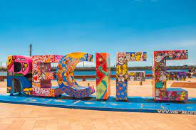

Home
Descubra o coração vibrante do Nordeste brasileiro através de nosso guia exclusivo, Pontos Turísticos de Recife. Nossa missão é levar você a uma jornada inesquecível pelas ruas coloridas, praias deslumbrantes e marcos históricos desta cidade encantadora.
Desde a arte inovadora do **Parque das Esculturas Francisco Brennand**, passando pelo emblemático **Marco Zero**, até a rica história do **Museu Cais do Sertão**, Recife é um caldeirão de cultura, história e beleza natural. Com dicas locais, histórias fascinantes e todas as informações necessárias, estamos aqui para garantir que sua experiência em Recife seja tão rica e vibrante quanto a própria cidade.
Explore conosco e crie memórias que durarão uma vida inteira. Seja bem-vindo e mergulhe na magia de Recife!
Além desses, há muitos outros locais para visitar, como a Praia de Maria Farinha, o Instituto Ricardo Brennand, a Praia do Pina, a Praia de Boa Viagem, a Praia de Piedade, a Enseada dos Corais, a Praia Gaibú, a Praia do Paiva e, claro, o famoso Porto de Galinhas, que fica um pouco mais distante1. Cada um desses lugares oferece uma experiência única, seja pelas belezas naturais, pela infraestrutura turística ou pelo valor histórico e cultural.